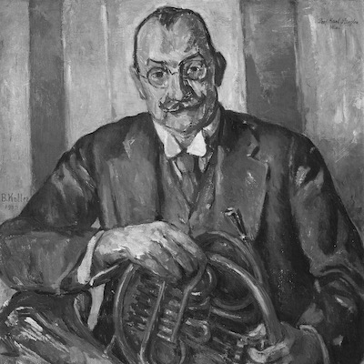

Horn Players
List of horn players who left recording evidence from the first
half of the twentieth century. Links to sound samples and
biographical notes, when available, can be found upon clicking
on their names. Players are listed in alphabetical order (by
last name).
-
Berger, Hans
- Busby, Thomas
-
Borsdorf, Adolf
- Épinoux, Émile
-
Freiberg, Gottfried von
- Hodin, Albert
-
Horner, Anton
-
Mont, Álvaro
- Morin, Alphonse
-
Stiegler, Karl
-
Vuillermoz, Édouard
- Student of K. Stiegler in Vienna
-
1st Horn of Berlin Philharmonic and Vienna Philharmonic
- Father of Roland Berger
Borsdorf, Adolf
(1854-1923)
-
1st Horn of Sir Henry Wood's Queen's Hall, London
Symphony, London Philharmonic, Royel Opera and Covent
Garden
- Teacher at Royal College and Royal Academy
Freiberg, Gottfried von
(1908-1962)
- Student of K. Stiegler in Vienna
- 1st Horn of Vienna Philharmonic
- Teacher at Vienna Music Academy
-
First performer of R. Strauss'
2nd Horn Concerto
Horner, Anton(1877-1971)
- Student of F. Gumpert in Leipzig
- First Horn of Philadelphia Orchestra
- Teacher at the Curtis Institute
- Horner model with Kruspe
Stiegler, Karl
(1876-1932)
- Student of J. Schantl in Vienna
- First Horn of Vienna Philharmonic
-
Teacher at Vienna Hochschule

- Student of J. Mohr in Paris
-
1st Horn of Paris Opera and
La Société des Concerts
- Teacher at Paris Conservatory
- Vuillermoz model by Selmer